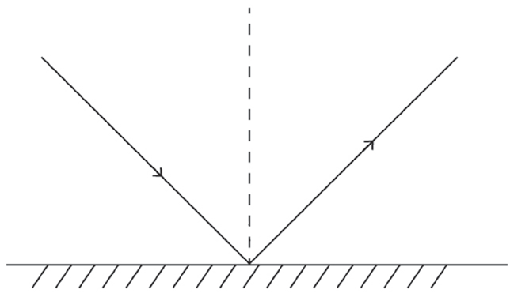
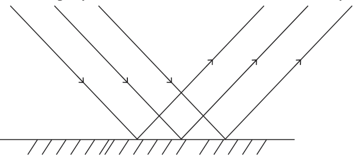
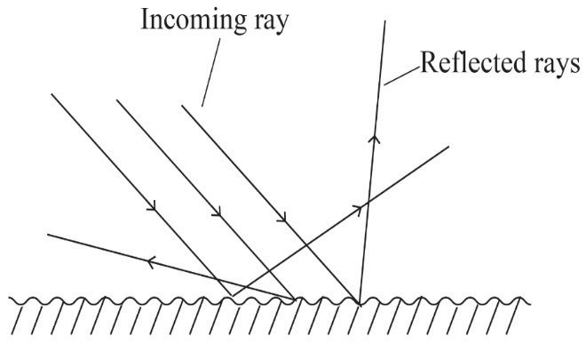

Therefore, this throwing back of light from the mirror is called reflection. It is possible to see an object because it either emits or reflects light.
When using a plane mirror, a reflected ray bounces off the mirror. A plane mirror is a thin glass whose surface (the bottom/back) is silvered to obtain a shiny reflecting surface. Figure 4.9 shows the reflection of light rays from a plane mirror. A polished metal surface can also reflect light rays like a plane mirror.

Regular and irregular reflection of light
There are two types of reflection: regular or specular reflection, and irregular or diffuse reflection.
Regular reflection
In regular reflection, the reflecting surface is so smooth that an image of the object that reflects the light is very clear. In regular reflection, all the reflected rays are in one direction. The rays are also parallel, as shown in Figure 4.10. Examples of such surfaces are mirrors and polished metal surfaces like highly reflective aluminium sheets.
When viewing the image of an object in a plane mirror, rays of light originate from the object and travel parallel along a straight line to the mirror. The same rays reach the eye after reflection, appearing as if originating from the image, resulting in a very sharp image.

Irregular reflection of light
Irregular reflection is the type of reflection in which light rays meet a rough reflecting surface. This is shown by the incident light rays reflected in different directions as shown in Figure 4.11. In irregular reflection, the reflected rays are not parallel, causing them to scatter in many directions. This results in the formation of distorted images.

Laws of reflection
The phenomenon of reflection is fundamental to the behaviour of light and serves as a foundation in the study of